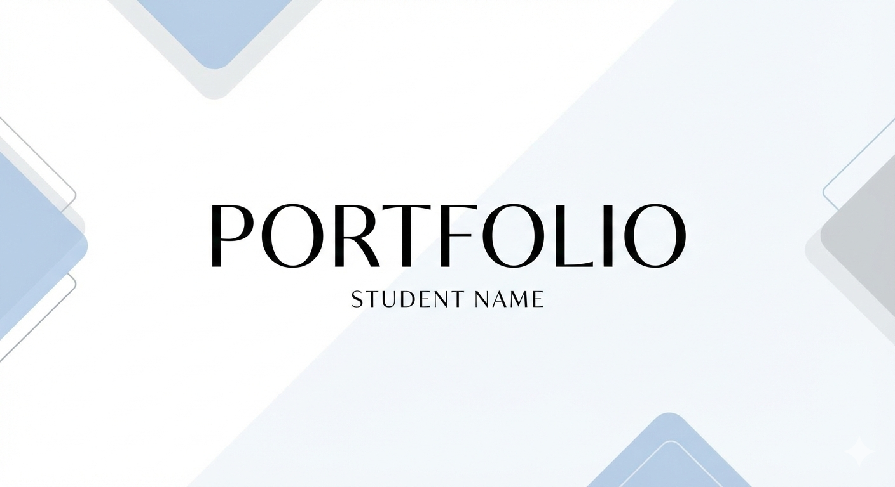
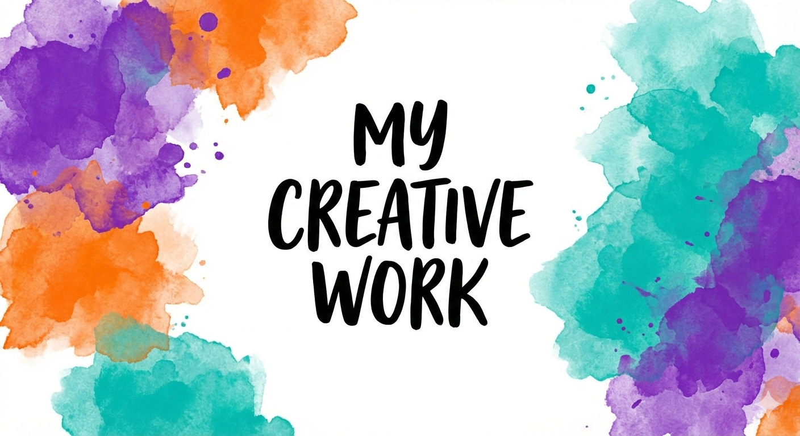

UX Research and Design

Sofia Rossi | someone@example.com
Kofi Mensah | someone@example.com
Meiwan Chen | someone@example.com

Min-Jun Kim | someone@example.com
User-Centered Agile Development
Yuki Tanaka | someone@example.com
Aarav Varma | someone@example.com
Jordan Taylor | someone@example.com
Isabella Santos | someone@example.com
Big Data Analytics
Mateo Hernandez | someone@example.com
Zoya Petrov | someone@example.com
Ji-Hoon Park | someone@example.com
Elena Dumitru | someone@example.com
Libraries, Archives, and Knowledge Environments in Society (LAKES)
Thanh Nguyen | someone@example.com
Ananya Iyer | someone@example.com
Diego Silva | someone@example.com
Astrid Lindquist | someone@example.com
Additional Resources
Here are some guides on how to get started building your own portfolio website:
- Portfolio Building Guide arrow_forward
- UMSI Portfolio Examples arrow_forward
- Meet with a CDO Career Coach arrow_forward